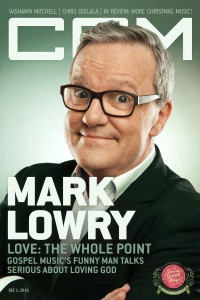

Mark Lowry
|  |
| 1 December 2016 CCM Digital |
 |
| 1 December 2017 CCM Digital |
Media coverage:
- Jul 1989 in Fundamentalist Journal "Ministry Update: Expect the Unexpected from Mark Lowry"
- Oct 1992 in CCM "Getting The Message: Media Alert"
- Aug 1993 in CCM "Getting The Last Word", by Dan Milette
- May 1994 in CCM "Hog Heaven", by April Hefner, Gregory J Rumburg
- May 1994 in CCM "In Concert: Tennessee Performing Arts Center, Nashville, TN", by Melanie Friebel
- Sep 1994 in CCM "A ReMARKable 'Face In This World'", by Deborah Evans Price
- Apr 1995 in CCM "In Concert: Good Shepherd Church, Owensboro, KY", by Melanie Friebel
- May 1996 in CCM "Funny Face", by Melissa Riddle
- Jun 1997 in CCM "Conversations: Tragedy Plus Time", by Jim Long
- Aug 1999 in Profile "Boredom Bothers Me", by Marcia Bartenhagen, Ali Hutchens
- Aug 2000 in CCM "Me, Myself, and Mark", by Mark Lowry
- Aug 2000 in Profile "All 4 One", by Nancy VanArendonk, Dan MacIntosh
- Jun 2004 in CCM "List-O-Rama: Christian Market Songs Covered by Mainstream Artists", by Chris Well
- 1 Dec 2016 in CCM Digital "How He Loves", by Andrew Greer
- 1 Dec 2017 in CCM Digital "The Art Of Conversation", by Kevin Sparkman
Albums & reviews:
1970: I'm Least In The Kingdom
1972: I'd Rather Have Jesus
1989: For the First Time on Planet Earth
1991: This Is The Life
1994: Mouth In Motion [video]
2000: Just Singing... No Kidding
2001: On Broadway
2007: I Love To Tell The Story, A Hymns Collection
2011: Unplugged and Unplanned
1972: I'd Rather Have Jesus
1989: For the First Time on Planet Earth
1991: This Is The Life
- Sum 1991 in YouthWorker, by Steve Rabey
- Jul 1993 in CCM, by April Hefner
- Sep 1993 in Religious Broadcasting, by Darlene A Peterson
- Win 1994 in YouthWorker, by Steve Rabey
1994: Mouth In Motion [video]
- Oct 1994 in CCM, by Gregory J Rumburg
- May 1996 in CCM, by Scott Thunder
- Dec 1998 in Aspire
- Jan 1999 in CCM, by Angela Woodward
- May 1999 in CCM Brasil, by Angela Woodward
2000: Just Singing... No Kidding
2001: On Broadway
- Jul 2001 in CCM, by Michael Fernandez
2007: I Love To Tell The Story, A Hymns Collection
2011: Unplugged and Unplanned
- Mar 2011 in CCM Digital, by Andy Argyrakis
- 15 Dec 2015 in CCM Digital, by Andy Argyrakis
- 15 Jul 2016 in CCM Digital, by Andy Argyrakis
- 1 Aug 2017 in CCM Digital, by Matt Conner
Award Summary (Nominations / Wins)
Dove Awards- 1993 Dove Awards
- Song: "Mary, Did You Know?"
- Long Form Music Video: Mouth In Motion [video]
- Southern Gospel Album: Some Things Never Change
- Inspirational Album: I Love To Tell The Story, A Hymns Collection
- Southern Gospel Album: How We Love
- Southern Gospel Album: What's Not To Love?
- Southern Gospel Artist
Books about Mark Lowry
- "How to Shock Soccer Moms and Be a B.M.O.C." in Soul2Soul (Christopher L Coppernoll, 1998)
- "Mark Lowry" in The Encyclopedia of Contemporary Christian Music (Mark Allan Powell, 2002)
Published articles:
© 2011 CMnexus. Last updated April 2021. Contact: editor -AT- cmnexus -DØT- org About